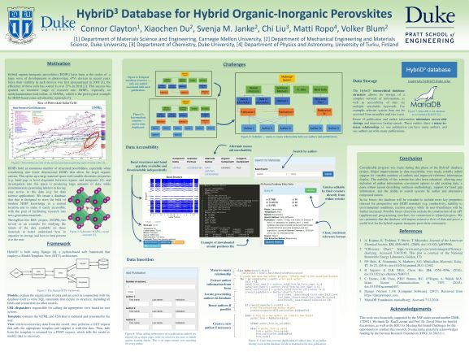

Projects
Automated Landing Zone Detection for Drones
Summer 2020 -- Autonodyne LLC
An important aspect of drone landing is making sure the area is safe to land on. My project was to automate this process. Several factors must be taken into account including the flatness of the ground at each point and proximity to obstacles. By combining results across multiple images from a video feed, points in 3D space are declared safe or unsafe and the final landing site can be chosen.
Major contributions: near-real-time 3D scene mapping, ground flatness calculation (involves the Euclidean Distance Transform)
Parallel MST Finding Algorithms
Fall 2019 -- Carnegie Mellon University 15-418
In general, graph algorithms are not highly parallelizable because of frequent intermediate dependencies and limited arithmetic intensities. This makes their parallelization an interesting topic of study. This project investigates several parallel variations on Prim's and Boruvka's MST finding algorithms using OpenMP. The greatest speedup was found using Boruvka's algorithm with graphs represented as "flexible adjacency lists."
Technologies used: C++, OpenMP
Read the final report here.
View the source code here.

Modeling 3-Terminal Tandem Solar Cells as Equivalent Circuits
Summer 2019 -- National Renewable Energy Laboratory, Golden CO
After decades of solar energy research, silicon solar cells (the dominant solar technology) are approaching their theoretical efficiency limit. To continue to progress, the solar community is looking beyond simple silicon cells toward alternatives such as tandem solar cells, which involve two or more vertically-layered cells. Tandem solar cells have already been proven to be significantly more efficient than standard single-junction cells.
3-terminal tandem solar cells are an alternative to typical tandem designs (namely, 2- and 4-terminal) with the potential to combine the benefits of both (high efficiency and ease of manufacturing). However, the benefits of the 3-terminal architecture come with a mitigating factor: increased operating complexity. This difficulty was the motivation for this project. In the study of solar cells, in particular the study of the integration of these cells into large-area modules, it is very useful to have a similar model that accurately approximates the device. A commonly-used circuit model for a typical, single-diode solar cell already exists, and this project created an analogous circuit model for a 3-terminal cell.
I created Python programs to quickly construct and analyze equivalent circuits, as well as compute valid tandem operation states. I showed that there exists an equivalent circuit model of a 3-terminal solar cell that predicts the operation of a real cell fairly accurately.
More details on this project will be released once a paper is published (expected late 2020).
Technologies used: Python (including pandas, SciPy, NumPy), Sentaurus (device simulator), SPICE (circuit simulator)
HybridD3 Database: Facilitating Solar Energy Research
Summer 2018 -- Duke University REU
Publication
R. Laasner, X. Du, A. Tanikanti, C. Clayton, M. Govoni, G. Galli, M. Ropo, V. Blum. MatD3: A Database and Online Presentation Package for Research Data Supporting Materials Discovery, Design and Dissemination. Journal of Open Source Software 5, 1945 (2020).
Hybrid organic-inorganic perovskites (HOIPs) are one of the most studied classes of materials for photovoltaic application due to their incredible absorbtion capabilities. Less than a decade after the first HOIP-based solar cell, these materials comprise the fastest-growing class of solar absorbing materials, with record efficiencies rivaling those of silicon cells.
The HybridD3 project is designed to store the bulk of modern HOIP data in a single location, allowing researchers to easily retrieve and compare useful data from many sources. The project is spearheaded by Dr. Volker Blum of the Mechanical Engineering and Materials Science department at Duke University and can be found at materials.hybrid3.duke.edu.
My roles in this project included developer and researcher. My work involved front- and back-end development of the database, restructuring much of the database tables and user interface to store data with complex relationships, such as authors. I also studied the literature on HOIPs and spoke with experts to determine how to maximize the usefulness of the database.
Technologies used: Django, Python, MySQL, HTML, CSS, JS
Take Note: Sheet Music Reader
Spring 2017 -- Carnegie Mellon University 15-112
"Take Note" is a program I wrote in Python (with a UI created in TkInter) that takes an image of (simple) piano sheet music as input and plays it. The program parses the image as an array of pixels, identifying staff lines, the presence/absence of a bass clef, and the types, pitches, and order of notes and chords. It then plays corresponding .wav files to recreate the song. A demonstration is below (skip to 1:20 to see Canon in D in action):
Mineral Analysis for the Carnegie Museum of Natural History
Summer 2017-Spring 2018 -- Carnegie Mellon University
The Carnegie Museum of Natural History has tens of thousands of mineral samples, many of which were categorized a long time ago using imprecise techniques. I have been helping to go through these samples and correctly characterize them by chemistry and crystal structure.
Technologies used: Scanning Electron Microscopy (SEM), Electron Dispersive X-ray Spectroscopy (EDS), Powder X-ray Diffraction (XRD)
Updated August 2020